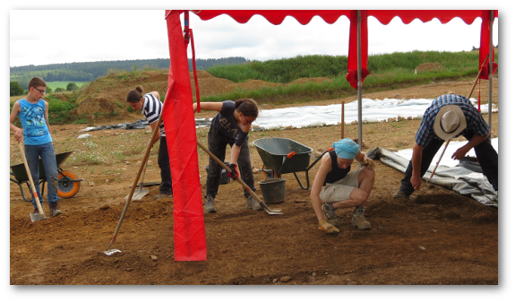
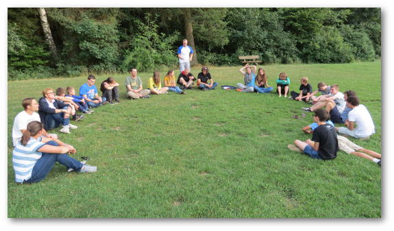
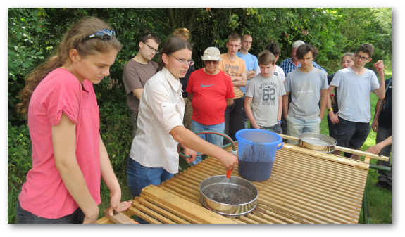
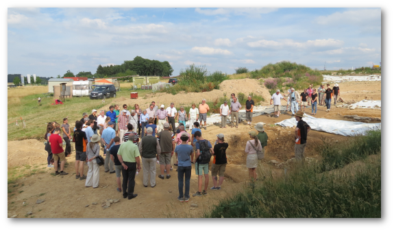

Luxemburgische Hilfe für die Uni-Trier - D’Georges Kayser Altertumsfuerscher organisieren archäologisches Lager in Wederath-Belginum
Zum 25. Mal haben Jugendliche und Erwachsene sich vom Bildschirm und trauten Heim getrennt um mit Hacke Schaufel und Pinsel die Spuren unserer Vorfahren während einer Woche lang zu suchen. Diese heißblütige Begeisterung für die Altertumsforschung liegt wohl in der Begeisterung nach Verborgenem unter der Erde zu stöbern sowie der einmaligen Atmosphäre unter Gleichgesinnten auf einem Camp.
Seit 1991 bieten „D’Georges Kayser Altertumsfuerscher“ (GKA) der Jugend (und den interessierten Erwachsenen) während einer Woche die Möglichkeit an archäologischen Ausgrabungen teilzunehmen. Hierzu wird jedes Jahr ein Archäologielager beim gallo-römischen Gutshof von Goeblingen-Miecher (Luxemburg) organisiert. Um das Jubiläum des 25ten Lagers gebührend hervor zu heben, beschlossen die ehrenamtlichen Organisatoren des Vereins ein außergewöhnliches Ausgrabungslager in Belginum-Wederath (Deutschland) zu veranstalten.

Belginum ist eines der bedeutendsten archäologischen Stätten an der Hunsrückhöhenstrasse bei der Ortschaft Wederath und weit über die Grenzen Deutschlands hinaus bekannt. Erst seit 1954 werden systematisch Ausgrabungen an diesem Ort, an der historisch bedeutenden Fernstraße zwischen Mainz und Trier gelegen, durchgeführt. Der rund 2.500 Gräber umfassende antike Friedhof aus keltischer (Latènezeit, um 400 v. Chr.) und römischer (bis in die Spätantike 400 n. Chr.) Zeit sowie Teile des Siedlungsareals (vicus), ein kleines Militärlager und mehrere Tempelbezirke wurden ausgegraben und dokumentiert.
Die herausragenden Funde und fortgeführten archäologischen Ausgrabungen boten die Ausgangsbasis zur Errichtung des Archäologieparks Belginum. Das Museumsgebäude umfasst neben den Ausstellungsräumen auch Säle die zu pädagogischen Zwecken genutzt werden.
Da durch Straßenbau Projekte größere Teile des Areals zerstört werden, wird seit vergangenem Jahr intensiv in diesem Bereich von der Universität Trier geforscht. Um ihre Kenntnisse zu verbessern und die örtliche Mannschaft bei den dringenden Arbeiten zu unterstützen waren die Ehrenamtlichen der GKA während 1200 Stunden dort vor dem Camp im Einsatz.

Belginum bietet also den idealen Ort um ein außergewöhnliches Archäologielager zu veranstalten. Gegraben wurde vom 19. bis 24. Juli in Zusammenarbeit mit dem Fachbereich Klassische Archäologie der Universität Trier unter der Leitung von Frau Dr. Rosemarie Cordie im vicus. Die Erwachsenen des Camps waren erfahrene Ausgräber, darunter zwei Archäologinnen, die die Jugendlichen Forscher während den 6 Tagen begleiteten. Vor Ort war es neben Frau Dr Cordie der Archäologe Marco Schrickel der die Anweisungen gab und die Übersicht auf die Ausgrabung hatte. Die 30 Teilnehmer, davon die Hälfte Jugendliche, gruben in drei unterschiedlichen Arealen.
Zum einen wurden im Wohngebiet Teile eines Steingebäudes untersucht. Viele Fragmente von Mühlsteinen deuten auf die Getreideverarbeitung hin. Als erfreuliche Nebenfunde sind einige Pfostenlöcher von einem Vorgängergebäude aus Holz ausgegraben worden. Andere Pfostenlöcher lassen sich mit dem neu entdeckten spätantiken burgus (zivile Verteidigungsanlage) von Wederath-Belginum in Verbindung setzen.
Zum anderen wurde der hintere, meistens unbebaute, bzw. spärlich bebaute Bereich einer gallo-römischen Wohnparzelle untersucht. Zur freudigen Überraschung stieß die Mannschaft auf einen recht großen Keller, eine 2,5 m tiefe Zisterne und eine Trockendarre.
Die dritte Mannschaft untersuchte einen Tempel im Tempelbezirk 3 von Belginum-Wederath.

Neben den freigelegten Strukturen reichen die Funde von Dachziegeln, Schieferplatten und unzähligen Keramikscherben (Amphoren, Gebrauchskeramik und Terra Sigillata Gefäßen) über Schlacke (Hinweise auf Eisenverarbeitung), dünnwandigen Glasscherben, Nägeln bis hin zu zwei Bronzemünzen.
Neben der Ausgräbertätigkeit kam der pädagogische Aspekt der Veranstaltung nicht zu kurz. Abgerundet wurde das Lager von einem Vortrag über die Geschichte der Archäologie, einer Führung durch den Archäologiepark Belginum, einem Atelier über Archäobotanik, einer Werkstatt zur Herstellung von Öllämpchen und dem Blick hinter die Kulissen der Ausgrabung (gefundene Scherben bestimmen, kleben und zeichnen).
Zur Tradition geworden ist die kleine Abschiedsfeier am letzten Tag der Archäologie-Lager. Auch in Belginum hatte die GKA hierzu eingeladen um über das Resultat der einwöchigen Aktion zu informieren. Der Einladung waren gefolgt; der Bürgermeister der Gemeinde Morbach mit seinen Gemeinderäten und Ortsvorstehern, Schöffe Lucien Koch von der Gemeinde Kehlen, Professor Dr Torsten Matterm von der Universität Trier, die Archäologinnen Franzika Doevener und Lynn Stoffel vom CNRA (L), der Vorsitzende des Freundeskreises Otzenhausen, Mitglieder des Fördervereines Belginum und GKA sowie Pressevertreter aus Deutschland und Luxemburg. Der Haussklave Geta, Heribert Rausch, war erstaunlicherweise auch wieder erschienen und berichtete den Anwesenden über das Leben der römischen Frau. Anschließend bedankte sich Bürgermeister Andreas Hacketal bei den ehrenamtlichen Ausgräbern der GKA und zeigte sich erstaunt, dass es noch Menschen gibt die unentgeltlich grenzüberschreitend im Dienst der Archäologie tätig sind.

Zuschüsse vom FNR (fonds national de la recherche) im Rahmen des PSP-Programmes (promoting science to public) ermöglichen es die finanzielle Beteiligung der Teilnehmer in annehmbaren Grenzen zu halten.